环境部署¶
¶
配置VMware虚拟网络¶
- 打开虚拟网络编辑器
-
创建三个Host-Only网络
VMnet 类型 子网地址 子网掩码 DHCP VMnet2 仅主机 10.10.10.0 255.255.255.0 取消勾选 VMnet3 仅主机 10.10.20.0 255.255.255.0 取消勾选 VMnet4 仅主机 10.10.30.0 255.255.255.0 取消勾选 关键点：全部取消DHCP，因为我们要手动指定IP，避免地址漂移。
取消“将主机虚拟适配器连接到此网络”：对于VMnet2/3/4，都不要勾选这个选项。这样宿主机不会出现在这些网段中，靶场更隔离。
pfSense¶
虚拟机基础配置
| 配置项 | 选择 |
|---|---|
| 硬件兼容性 | Workstation 16.x 或更高（默认即可） |
| 安装来源 | 安装程序光盘映像文件（ISO） → 浏览选择你解压好的 pfSense-CE-2.7.2-RELEASE-amd64.iso |
| 客户机操作系统 | 其他 → 版本选 FreeBSD 14 64位（如果没有14，选 FreeBSD 13/12 也可以） |
| 虚拟机名称 | pfSense |
| 位置 | 建议放在 SSD 上，如 D:\VMs\pfSense（路径不要有中文） |
| 处理器 | 1 个处理器，1 个核心 |
| 内存 | 2048 MB（2GB） |
| 网络类型 | 先选"不使用网络连接"（后面手动加三张网卡） |
| I/O 控制器类型 | LSI Logic（默认） |
| 磁盘类型 | SCSI（默认） |
| 磁盘 | 创建新虚拟磁盘 → 大小 20GB → 选择"将虚拟磁盘拆分成多个文件" |
网卡配置
3 个 Network Adapter，分别对应 VMnet2、VMnet3、VMnet4。
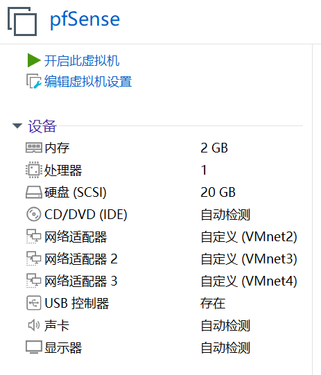
安装 pfSense
-
启动虚拟机 点击“开启此虚拟机”。如果出现“无法连接虚拟设备”的提示，选择 否（这只是提示虚拟光驱/软驱问题，不影响）。
-
安装界面 启动后会看到 pfSense 的安装菜单：
操作：直接按 回车（默认选中 Install pfSense）。 -
接受许可协议 出现许可协议界面 → 按 回车 接受。
-
键盘布局 提示选择键盘布局 → 选择 Default (US) → 回车。
-
分区方案 提示选择分区方案：
选择 Auto (UFS)（简单，适合虚拟机）→ 回车。 -
选择磁盘 提示选择要安装的磁盘 → 应该显示 da0（20GB 的虚拟磁盘）→ 选中后回车。
-
确认分区 提示“Last Chance”确认 → 选择 YES → 回车。
-
等待安装 安装过程大约 1-2 分钟。完成后会出现：
选择 Reboot。
重新分配接口
在 Enter an option: 后面输入 1（Assign Interfaces），按回车。
接下来会依次询问：
| 提示 | 你的输入 | 说明 |
|---|---|---|
| Should VLANs be set up now? | n |
不需要 VLAN |
| Enter the WAN interface name | em0 |
第一张网卡 |
| Enter the LAN interface name | em2 |
第三张网卡（VMnet4） |
| Enter the Optional 1 interface name | em1 |
第二张网卡（VMnet3，DMZ） |
| Do you want to proceed? | y |
确认 |
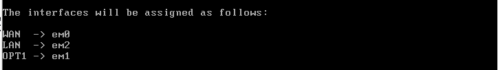
配置 IP 地址
分配完接口后，回到主菜单，输入 2（Set interface IP address）。
先配 WAN (em0)：
| 提示 | 输入 |
|---|---|
| Select interface | 1（WAN） |
| Configure via DHCP? | n |
| IPv4 address | 10.10.10.1 |
| Subnet bit count | 24 |
| Upstream gateway | 直接回车 |
| IPv6 DHCP? | n |
| DHCP server on WAN? | n |
| Revert to HTTP? | n |
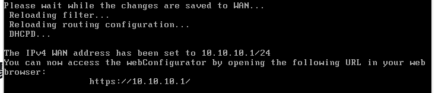
再配 DMZ (em1/OPT1)： 回到主菜单 → 输入 2 → 选择 3（OPT1）
| 提示 | 输入 |
|---|---|
| Configure via DHCP? | n |
| IPv4 address | 10.10.20.1 |
| Subnet bit count | 24 |
| Upstream gateway | 直接回车 |
| IPv6 DHCP? | n |
| DHCP server? | n |
| Revert to HTTP? | n |
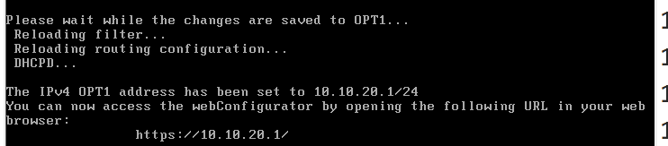
LAN 口 (em2) 默认是 10.10.30.1/24，如果显示的不是这个，也按同样方法改成 10.10.30.1。
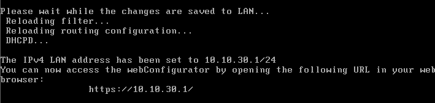
第三步：验证 配置完成后，主菜单应该显示：
WAN (wan) -> em0 -> v4: 10.10.10.1/24
LAN (lan) -> em2 -> v4: 10.10.30.1/24
OPT1 (opt1) -> em1 -> v4: 10.10.20.1/24
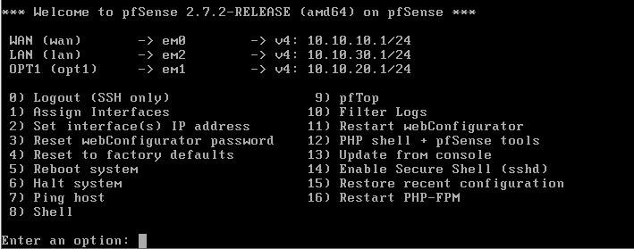
然后输入 7（Ping host），依次测试：kali¶
配置双网卡
| 网卡 | 网络连接 | 用途 |
|---|---|---|
| 网络适配器 | VMnet8 (NAT) | 更新工具 |
| 网络适配器 2 | VMnet2 | WAN 攻击 |
# NAT - VMnet8 (更新用)
auto eth0
iface eth0 inet dhcp
# WAN - VMnet2 (攻击网)
auto eth1
iface eth1 inet static
address 10.10.10.10
netmask 255.255.255.0
gateway 10.10.10.1
保存退出：Ctrl + O → 回车 → Ctrl + X
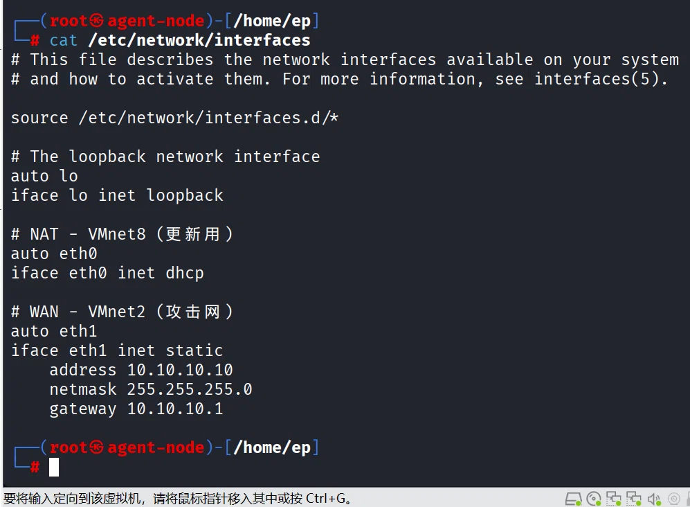
重启网络
验证ip配置
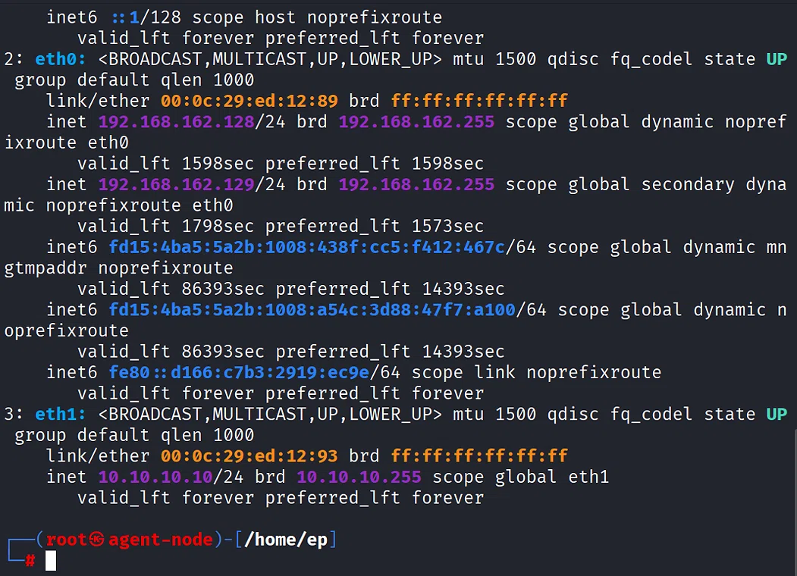
验证连通性
pfSense WAN，应该通；如果不通应该是pfSense过滤了ICMP包 在 pfSense 控制台输入 8（Shell），执行： 这会临时禁用 pfSense 的包过滤。然后在 Kali 上 ping 10.10.10.1，应该能通。验证后记得恢复：
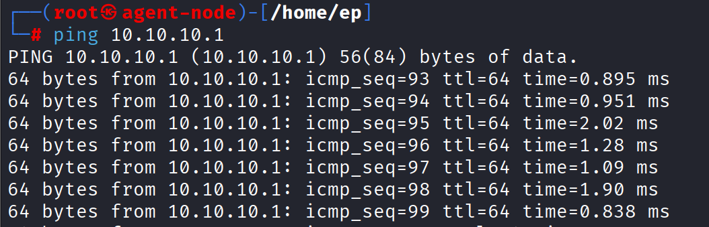
测试隔离效果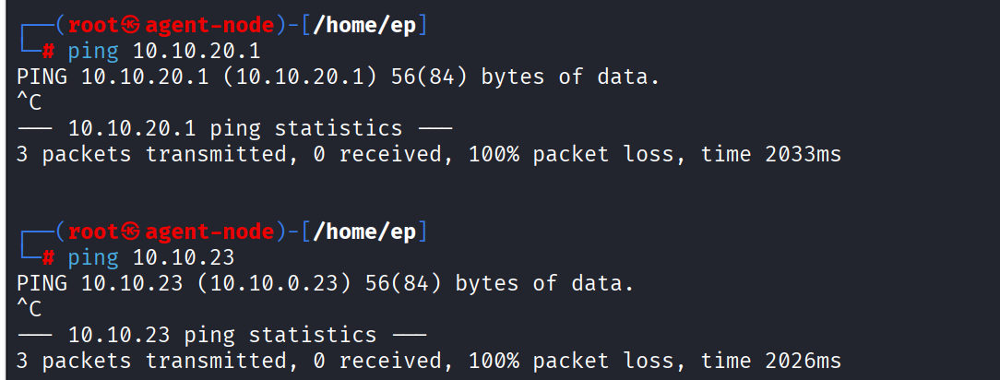
安装常用工具
sudo apt update && sudo apt install -y \
nmap impacket-scripts bloodhound hashcat john \
responder crackmapexec sqlmap gobuster \
enum4linux whatweb
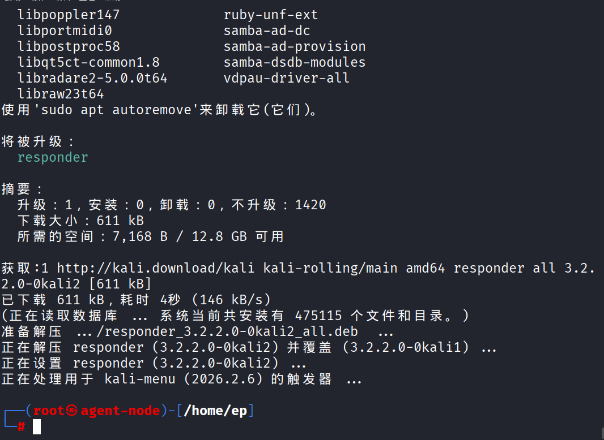
DC01¶
Windows Server 2019 Standard (Desktop Experience)
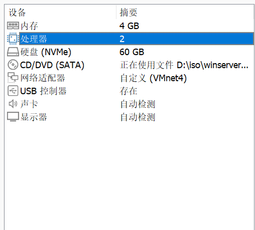
改计算机名
-
打开“服务器管理器” → 本地服务器
-
点击计算机名 → 更改
-
改为 DC01 → 确定 → 重启
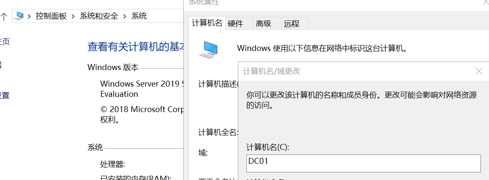
设置静态 IP
-
控制面板 → 网络和共享中心 → 更改适配器设置
-
右键“Ethernet” → 属性 → IPv4
-
配置：
-
IP: 10.10.30.10
-
掩码: 255.255.255.0
-
网关: 10.10.30.1
-
DNS: 10.10.30.10
-
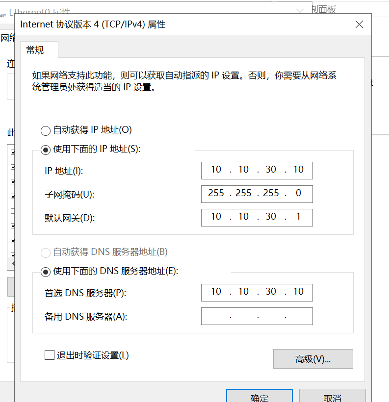
验证连通性
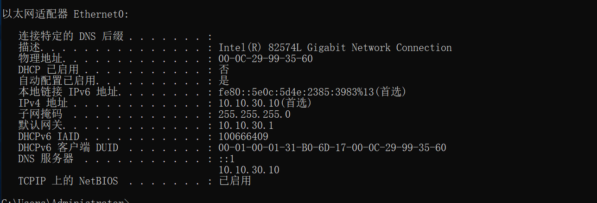
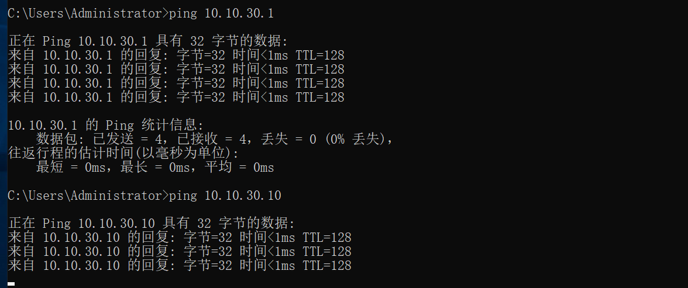
安装 AD DS + DNS
-
打开 服务器管理器 → 添加角色和功能
-
勾选 Active Directory 域服务 + DNS 服务器
-
弹出提示框 → 点击 添加功能
-
一路下一步到“安装”
-
安装完成后，点击服务器管理器上方的黄色旗帜图标 → 将此服务器提升为域控制器
-
提升为域控制器的配置：
| 步骤 | 选择 |
|---|---|
| 部署配置 | 添加新林 |
| 根域名 | lab.local |
| 域控制器选项 | 功能级别：Windows Server 2016；勾选 DNS 服务器 + 全局编录 |
| DSRM 密码 | 自定义（记牢，恢复时用） |
| DNS 选项 | 默认 |
| NetBIOS 名 | 自动生成为 LAB |
| 路径 | 默认 |
| 先决条件检查 | 通过后点击 安装 |
安装完成后系统会自动重启。
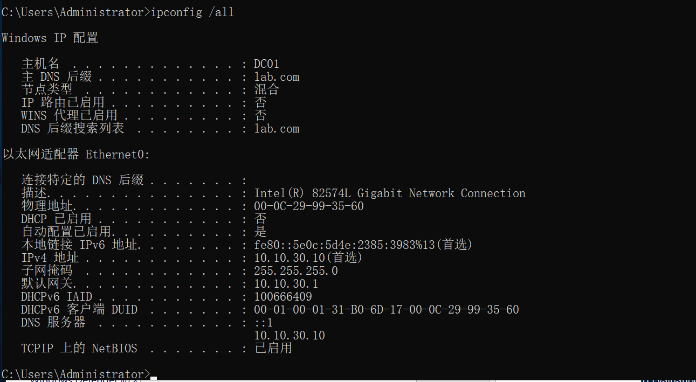
创建 OU 和用户
-
打开 Active Directory 用户和计算机：
-
服务器管理器 → 工具 → Active Directory 用户和计算机
-
创建 OU：
-
右键你的域名 → 新建 → 组织单位：
OU 名称 用途 Employees 普通域用户 ServiceAccounts 服务账户 -
创建用户：
-
在 Employees OU 中右键 → 新建 → 用户：
字段 值 姓名 employee1用户登录名 employee1密码 Passw0rd2取消勾选"用户下次登录时须更改密码" ✅ 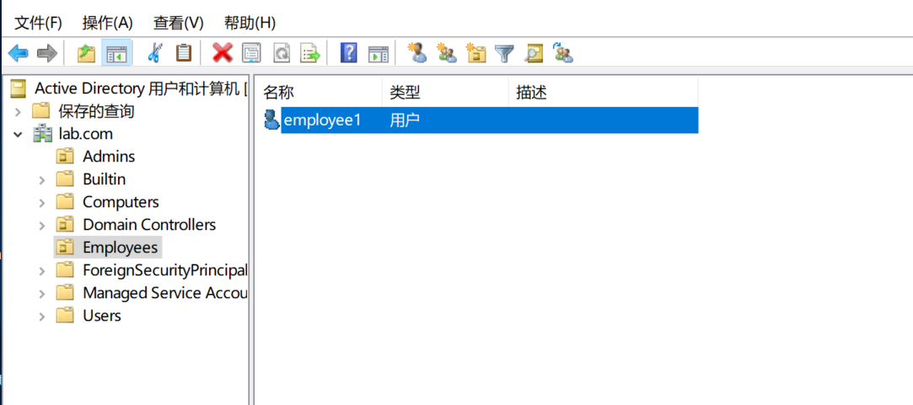
- 在 ServiceAccounts OU 中右键 → 新建 → 用户：
字段 值 姓名 svc_sql用户登录名 svc_sql密码 Passw0rd1@2026取消勾选"用户下次登录时须更改密码" ✅ 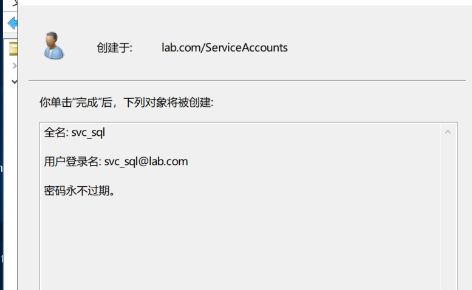
预埋 DCSync ACL 错误¶
# 授予 svc_sql DCSync 权限
$domainDN = (Get-ADDomain).DistinguishedName
$acl = Get-Acl "AD:$domainDN"
$identity = New-Object System.Security.Principal.NTAccount("LAB\svc_sql")
$rights = [System.DirectoryServices.ActiveDirectoryRights]::ExtendedRight
$type = [System.Security.AccessControl.AccessControlType]::Allow
# 复制目录更改
$guid1 = [Guid]"1131f6aa-9c07-11d1-f79f-00c04fc2dcd2"
$rule1 = New-Object System.DirectoryServices.ActiveDirectoryAccessRule($identity, $rights, $type, $guid1)
$acl.AddAccessRule($rule1)
# 复制目录更改所有
$guid2 = [Guid]"1131f6ad-9c07-11d1-f79f-00c04fc2dcd2"
$rule2 = New-Object System.DirectoryServices.ActiveDirectoryAccessRule($identity, $rights, $type, $guid2)
$acl.AddAccessRule($rule2)
Set-Acl -Path "AD:$domainDN" -AclObject $acl
验证权限已设置
(Get-Acl "AD:$((Get-ADDomain).DistinguishedName)").Access | Where-Object {$_.IdentityReference -like "*svc_sql*"} | Select IdentityReference, ActiveDirectoryRights
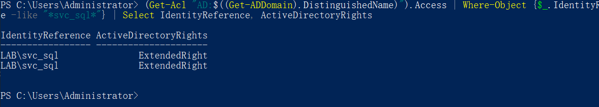
DCSync 权限预埋成功。
-
LAB\svc_sql 拥有两条 ExtendedRight 权限，分别对应“复制目录更改”和“复制目录更改所有”
-
这是后续 DCSync 攻击能成功的关键前提。
FS01¶
FS01 是内网横向移动和 Kerberoasting 的目标
创建虚拟机：
| 配置项 | 值 |
|---|---|
| 系统 | Windows Server 2019 |
| 内存 | 4GB |
| 处理器 | 2核 |
| 磁盘 | 60GB |
| 网络适配器 | 自定义 (VMnet4) — LAN 区 |
安装过程：
版本选 Windows Server 2019 Standard (Desktop Experience)
安装完成后设置管理员密码
安装后配置：
-
改计算机名为 FS01，重启
-
设置静态 IP：
-
IP: 10.10.30.20
-
掩码: 255.255.255.0
-
网关: 10.10.30.1
-
DNS: 10.10.30.10（指向 DC01）
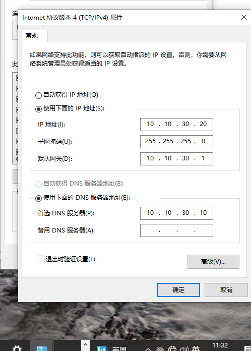
- 加入域：
-
用域管理员凭据（LAB\Administrator）完成加入
-
重启
验证
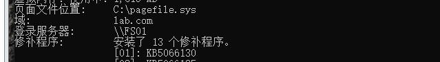
在FS01上安装SQLserver¶
安装
下载 SQL Server 2022 Express 的 ISO 文件 链接：https://go.microsoft.com/fwlink/?LinkID=2213259&clcid=0x409
-
点击第一项：New SQL Server standalone installation or add features to an existing installation
-
接下来会进入安装向导，按以下选择：
| 步骤 | 选择 |
|---|---|
| 产品密钥 | 默认（Express 版免费，直接下一步） |
| 许可条款 | 勾选接受 → 下一步 |
| Microsoft 更新 | 取消勾选 → 下一步（FS01 没网，勾了会卡） |
| 安装规则 | 等待检查通过 → 下一步 |
| 功能选择 | 全选（或至少勾选：数据库引擎服务、客户端工具） |
| 实例配置 | 选 默认实例（MSSQLSERVER）或 命名实例（SQLEXPRESS），记下实例名 |
| 服务器配置 | 默认 |
| 数据库引擎配置 | 选混合模式，设置 sa 密码：P@ssw0rd123，添加当前用户为管理员 |
| 其他配置 | 默认 → 下一步 |
| 安装 | 点击安装，等待完成（约 10-15 分钟） |
关键点：实例名要记住 安装时选择的实例名很重要，后续连接和配置都要用：
实例类型 连接方式 端口配置位置 默认实例 localhost 或 . SQL Server 配置管理器 → MSSQLSERVER 的协议 命名实例 localhost\SQLEXPRESS SQL Server 配置管理器 → SQLEXPRESS 的协议 建议选默认实例（MSSQLSERVER），这样连接时不用带实例名，简单一些。
配置 TCP/IP 和端口 1433
-
打开 SQL Server 配置管理器
开始菜单搜索 SQL Server Configuration Manager，打开。
-
启用 TCP/IP
-
展开 SQL Server 网络配置 → MSSQLSERVER 的协议
-
右键 TCP/IP → 启用
-
弹出提示“需要重启服务” → 确定
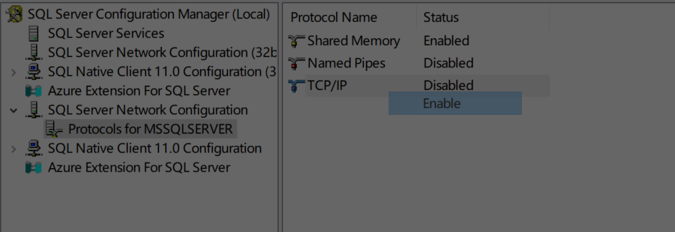
3. 设置端口 1433 -
右键 TCP/IP → 属性
-
切换到 IP 地址 标签
-
拉到最下方 IPAll 区域：
-
TCP 动态端口：清空（删掉里面的 0）
-
TCP 端口：输入 1433
-
点击 确定
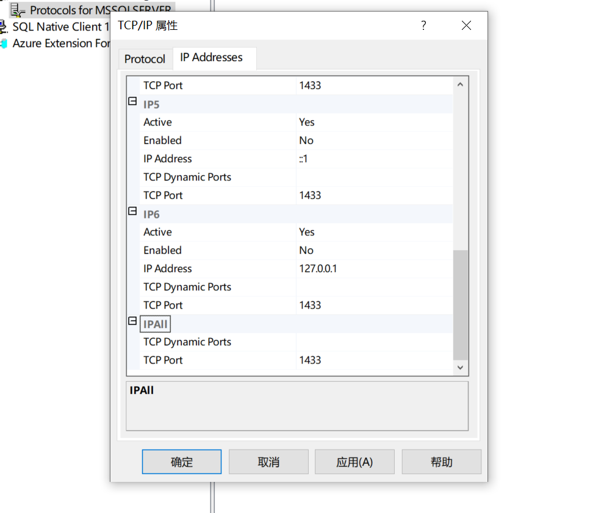
-
重启 SQL Server 服务
-
展开 SQL Server 服务
-
右键 SQL Server (MSSQLSERVER) → 重新启动
-
等待服务重启完成
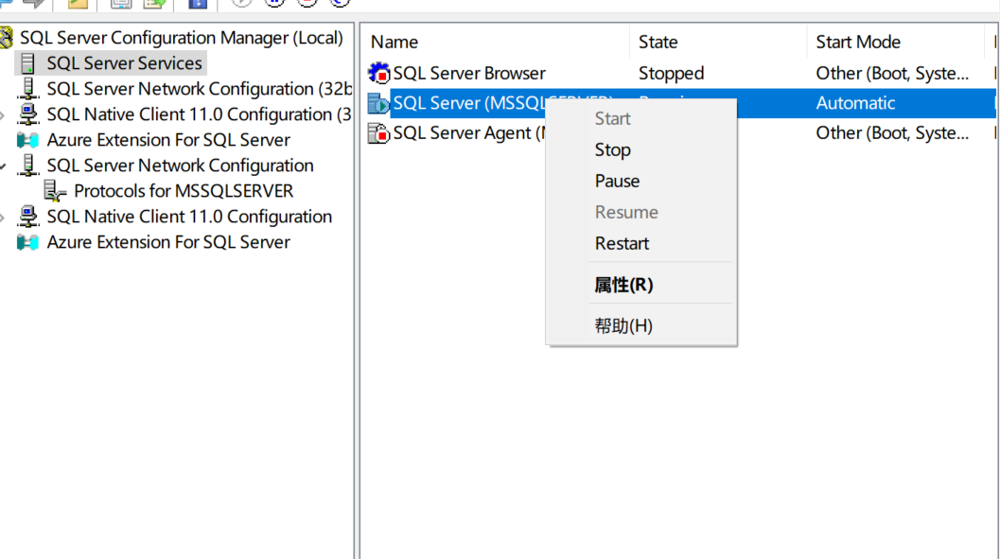
-
验证端口监听
应该看到 0.0.0.0:1433 或 [::]:1433 处于 LISTENING 状态。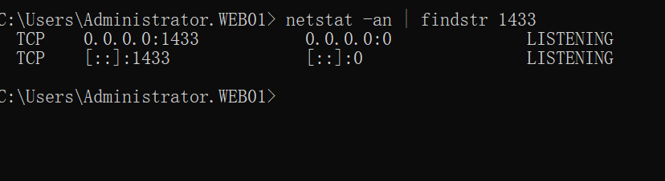
-
FS01 上打开 CMD 或 PowerShell
-
用 sqlcmd 连接
```cmd sqlcmd -S localhost -U sa -P P@ssw0rd123 ```-
执行命令
-
注册 SPN（Kerberoasting 目标） 在 FS01 的 PowerShell（管理员）中执行：
```powershell
setspn -A MSSQLSvc/FS01.lab.com:1433 LAB\svc_sql
setspn -L LAB\svc_sql
```
预期输出应该显示 MSSQLSvc/FS01.lab.com:1433。

创建文件共享
New-Item -Path "C:\Share" -ItemType Directory -Force
New-SmbShare -Name "Share" -Path "C:\Share" -FullAccess "LAB\employee1"
"DB_Password=P@ssw0rd123`nAdmin_Password=Admin@123" | Out-File "C:\Share\passwords.txt"
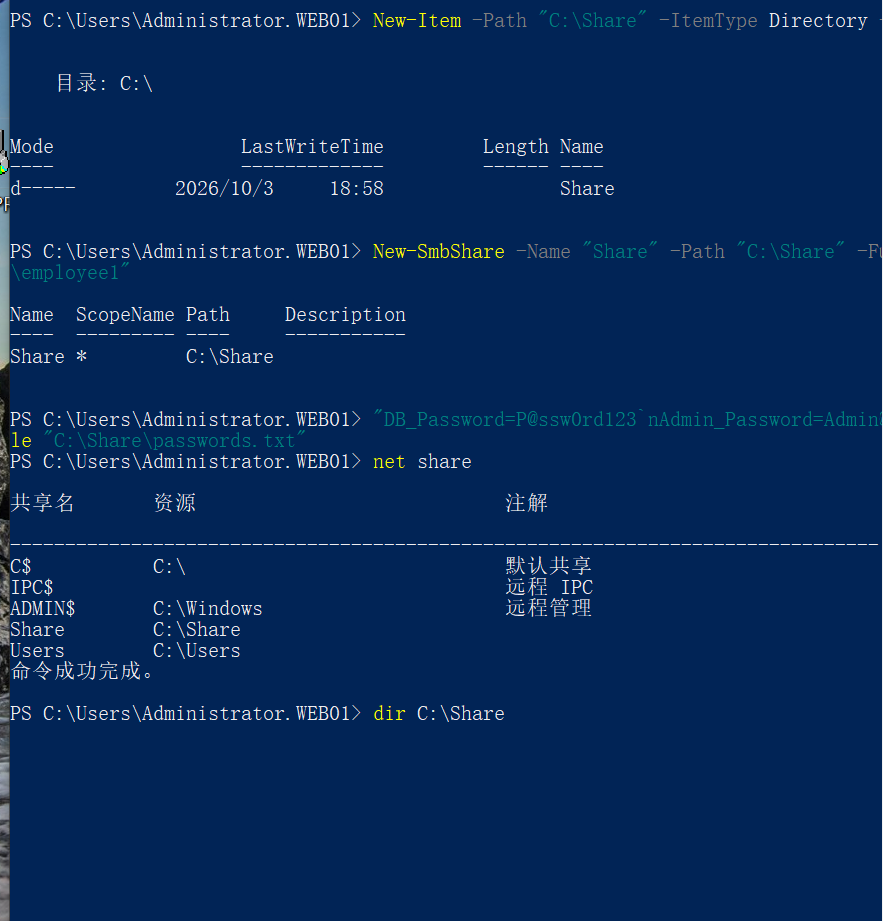
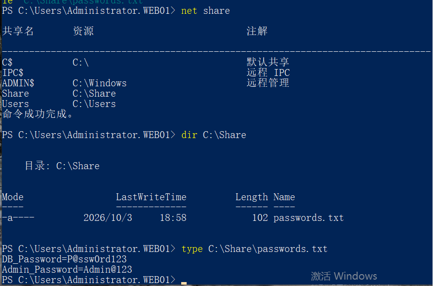
ws01¶
创建虚拟机
| 配置项 | 值 |
|---|---|
| 系统 | Windows 10 Pro |
| 内存 | 4GB |
| 处理器 | 2核 |
| 磁盘 | 60GB |
| 网络适配器 | 自定义 (VMnet4) — LAN 区 |
| ISO | Windows 10 Pro 安装镜像 |
安装步骤速查
启动虚拟机，从 ISO 启动
语言和区域：中文或英文均可
安装类型：选 “自定义：仅安装 Windows”
版本选择：Windows 10 Pro（必须是 Pro，家庭版无法加入域）
磁盘分区：选 60GB 磁盘 → 下一步（自动分区）
等待安装完成（约 15-20 分钟）
OOBE 设置：
区域：中国
键盘：微软拼音
网络：选“我没有 Internet 连接” → “继续执行受限设置”（避免强制登录微软账户）
用户名：Administrator（或自定义）
密码：Admin@123（本地管理员密码，与 WEB01 复用）
安装后配置 改计算机名为 WS01，重启
设置静态 IP：
IP: 10.10.30.30
掩码: 255.255.255.0
网关: 10.10.30.1
DNS: 10.10.30.10
加入域 lab.com
用域管理员登录一次，留下凭据缓存
用 employee1 登录一次，模拟普通员工
验证
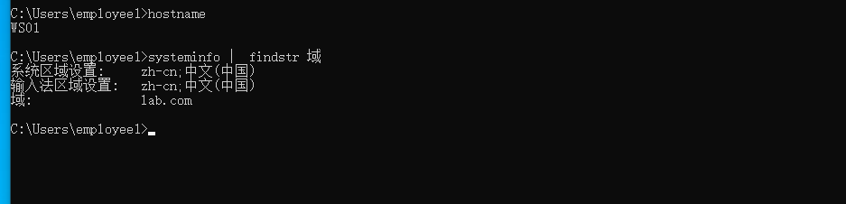
MONITOR¶
创建虚拟机：
配置项 值 系统 Ubuntu Server 24.04 内存 8GB（ELK 吃内存） 处理器 2核 磁盘 60GB 网络适配器 自定义 (VMnet4) — LAN 区 安装 Ubuntu Server：
语言：English
网络：手动配置 10.10.30.100/24，网关 10.10.30.1，DNS 10.10.30.10
用户名：monitor
密码：Admin@123
软件选择：OpenSSH server（方便远程管理）
WEB01¶
创建虚拟机：
| 配置项 | 值 |
|---|---|
| 系统 | Ubuntu Server 24.04 |
| 内存 | 8GB（跑多容器） |
| 处理器 | 2核 |
| 磁盘 | 60GB |
| 网络适配器 | 自定义 (VMnet3) — DMZ 区 |
安装 Ubuntu Server：
- 语言：English
- 网络：手动配置 10.10.20.10/24，网关 10.10.20.1，DNS 10.10.30.10
- 用户名：web
- 密码：Admin@123
- 软件选择：OpenSSH server + Docker
安装后配置
- 配置静态 IP 10.10.20.10
-
安装 Docker（如果安装时没选）：
- 部署 Vulhub 漏洞环境： - 验证：